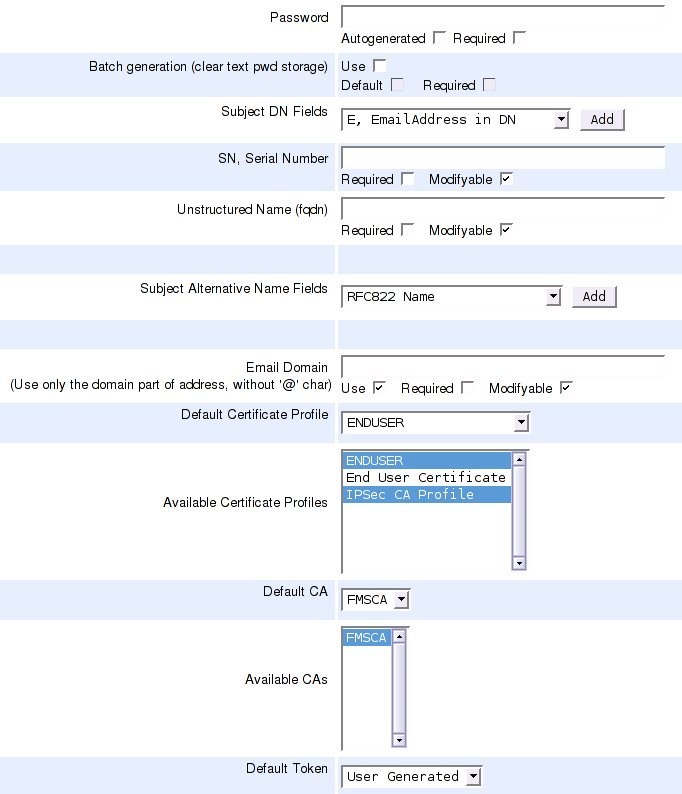

EJBCA and Cisco IOS
This guide is contributed by Bruno Bonfils.
The following displays the IOS configuration related to the CA:
! crypto ca trustpoint FMSCA enrollment url http://your.ca.host.name:8080/ejbca/publicweb/apply/scep serial-number source interface Ethernet0 auto-enroll regenerate ! The enrollment line tells how (the method, here an http url) to contact the PKI software. Note that you must omit the pkiclient.exe filename at the end which is automatically add by IOS.
The serial-number tells IOS to include the serial number in the request.
The name of the trust point you use MUST MATCH exactly the short name of your CA in EJBCA (FMSCA in this example).
Then use the following command to fetch the CA certificate:
# crypto ca authenticate FMSCA Next, login to EJBCA, and create a new entity profile according to the following example:

Then, do the password enrollment using the command:
# crypto ca enroll FMSCACheck your ejbca logs, you should see something like:
ERROR [PKCS10RequestMessage] No CN in DN: SN=12013150+unstructuredName=your.ciscobox.hosts.nameERROR [Log4jLogDevice] October 19, 2005 9:48:33 AM CEST, CAId : 0, CA, EVENT_ERROR_USERAUTHENTICATION, Administrator : \PUBLICWEBUSER, IP Address : 192.168.134.1, User : 12013150, Certificate : No Certificate Involved, Comment : \Got request for nonexisting user: 1201315So, you know you must add an entity using the serial number as username, the password you define in IOS, and serialNumber/unstructuredNamed as subject DN fields.
After adding the end entity, do the password enrollment again. If you see this you have enrolled successfully:
saroumane#sh crypto ca certCertificate Status: Available Certificate Serial Number: 426FA96340F5D2CA Certificate Usage: General Purpose Issuer: c=FR o=Fimasys cn=Fimasys Security CA Subject: Name: your.ciscobox.hosts.name Serial Number: 12013150 serialNumber=12013150 hostname=your.ciscobox.hosts.name Validity Date: start date: 08:58:28 CET Oct 19 2005 end date: 09:08:28 CET Oct 19 2007 Associated Trustpoints: FMSCACA Certificate Status: Available Certificate Serial Number: 7AA2B9942CD0D362 Certificate Usage: Signature Issuer: c=FR o=Fimasys cn=Fimasys Security CA Subject: c=FR o=Fimasys cn=Fimasys Security CA Validity Date: start date: 07:29:35 CET Oct 17 2005 end date: 07:39:35 CET Oct 15 2015 Associated Trustpoints: FMSCA Cisco IOS Simulator
There is a Cisco 7200 emulator called dynamips available and a graphical front end GNS3.
The following describes how to configure and enroll directly with EJBCA using GNS3 on Ubuntu 8.10:
sudo apt-get install gns3 uml-utilities bridge-utils Note that this requires EJBCA version 3.8.1 or later.
Configure the host and gns3 to be able to communicate with each other, allowing the router can connect to EJBCA on the host computer. This is taken from http://www.blindhog.net/linux-bridging-for-gns3-lan-communications/".
1. Create a tap interface
sudo tunctl -t tap0
2. Remove ip addressing and set eth0 and tap0 to promiscuous mode
sudo ifconfig tap0 0.0.0.0 promisc up
sudo ifconfig eth0 0.0.0.0 promisc up
3. Create a new bridge interface
sudo brctl addbr br0
4. Add tap0 and eth0 to the bridge group
sudo brctl addif br0 tap0
sudo brctl addif br0 eth0
5. Enable the bridge interface and give it an ip address
sudo ifconfig br0 up
sudo ifconfig br0 10.10.10.99/24
6. Configure the default route
sudo route add default gw 10.10.10.254 Start gns3:
sudo gns3 Configure with IOS image, for example c7200-jk9s-mz.124-13b.bin (an image with crypto commands), it's available on the net. Also configure a simple topology:
drag cloud to topology window
drag c7200 to topology window
configure cloud and add tap0 interface
add manual link from cloud to c7200
start c7200
open console on c7200
enter configuration and configure FastEthernet0/0 with ip 10.10.10.98/255.255.255.0
Now you should be able to ping the host computer, where EJBCA is running.
Next, do the actual enrollment as described above, using the following commands:
Router>enable Router#configure terminal Router(config)# Router(config)#crypto ca trustpoint ScepCA Router(ca-trustpoint)#enrollment url http://10.10.10.99:8080/ejbca/publicweb/apply/scep Router(ca-trustpoint)#serial-number Router(ca-trustpoint)#ip-address none Router(ca-trustpoint)#subject-name OU=Network Management, O=PrimeKey Solutions AB, C=SE Router(ca-trustpoint)#revocation-check none Router(ca-trustpoint)#exit Router(config)#crypto ca authenticate ScepCA Router(config)#crypto ca enroll ScepCA Check the log for the username of the user you must create is called. create end entity profile and user with DN containing SN=FFFFFF and unstructuredName=Router, as seen in the log file (FFFFFF and Router are the default values in the simulator).
Router(config)#crypto ca enroll ScepCA Router(config)#exit Router#show crypto ca certificateYou can always look at the defined trustpoints using the command:
Router#show crypto ca trustpointsIf you are enrolling towards an RA instead, issue the following commands (Refer to the External RA documentation for information on how to set up an external RA for SCEP).
Router>enable Router#configure terminal Router(config)# Router(config)#crypto ca trustpoint ScepRA Router(ca-trustpoint)#enrollment url http://10.10.10.99:8080/scepraserver/scep Router(ca-trustpoint)#enrollment mode ra Router(ca-trustpoint)#serial-number Router(ca-trustpoint)#ip-address none Router(ca-trustpoint)#subject-name OU=Network Management, O=PrimeKey Solutions AB, C=SE Router(ca-trustpoint)#revocation-check none Router(ca-trustpoint)#exit Router(config)#crypto ca authenticate ScepRA Router(config)#crypto ca enroll ScepRANote that this would only have a chance to work in EJBCA 3.8.1 and later, and actually it does not work due to the following error in Cisco. If you have any ideas, please contact us.
Router#debug crypto pki API Router#debug crypto pki messages Router#debug crypto pki server Router#debug crypto pki transactions Router#debug crypto pki validation ... *Jan 16 21:47:32.546: CRYPTO_PKI: make trustedCerts list for ScepRA *Jan 16 21:47:32.550: CRYPTO_PKI: subject="c=SE,o=Foo,cn=Scep RA" serial number= 3A 46 2F B4 5B AC 06 47 *Jan 16 21:47:32.554: CRYPTO_PKI: subject="c=SE,o=EJBCA Sample,cn=ScepCA" serial number= 19 A6 7D 78 AF 9D 3B 27 *Jan 16 21:47:32.566: E ../cert-c/source/p7digdat.c(377) : Error #703h *Jan 16 21:47:32.566: E ../cert-c/source/p7spprt.c(589) : Error #703h *Jan 16 21:47:32.582: pkcs7 verify data returned status 0x703 *Jan 16 21:47:32.582: CRYPTO_PKI: status = 1795: failed to verify *Jan 16 21:47:32.582: %PKI-6-CERTFAIL: Certificate enrollment failed. *Jan 16 21:47:32.582: CRYPTO_PKI: All enrollment requests completed for trustpoint ScepRA.